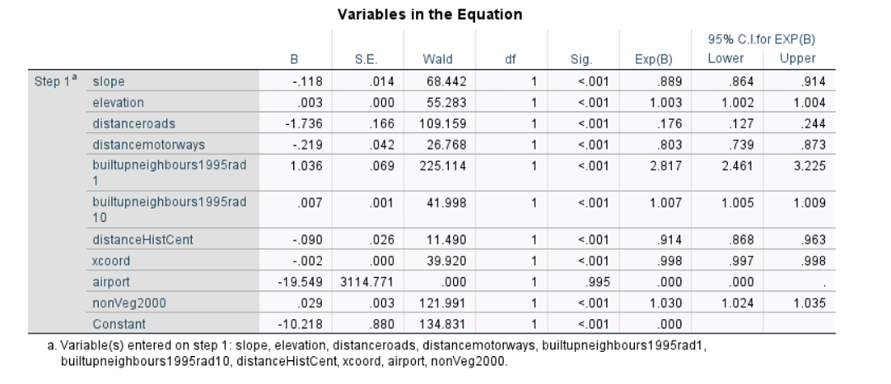
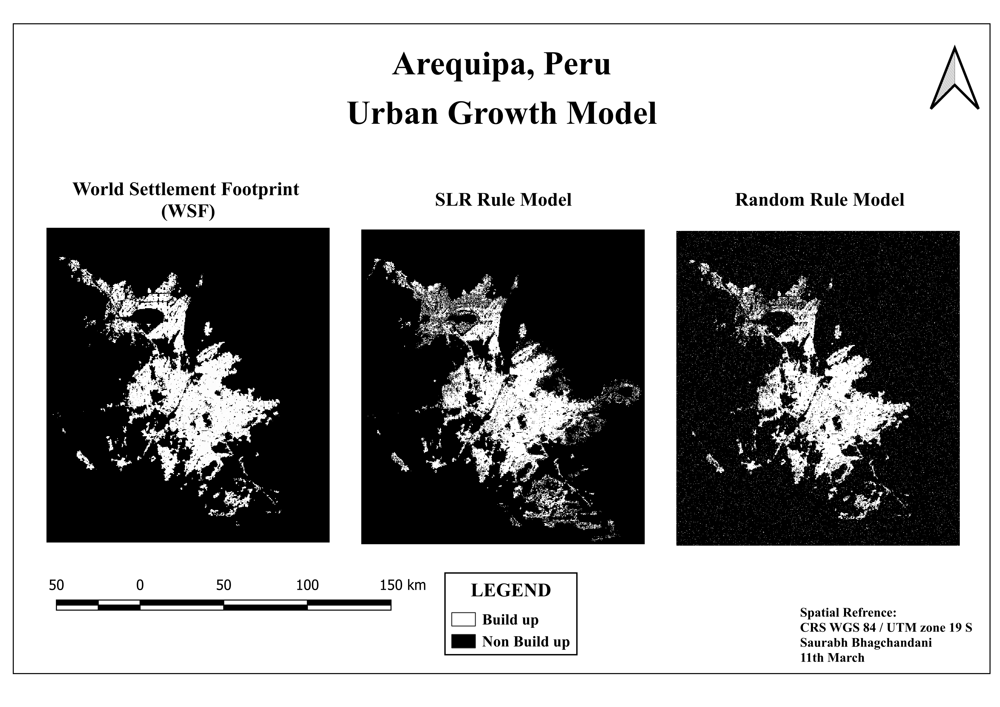
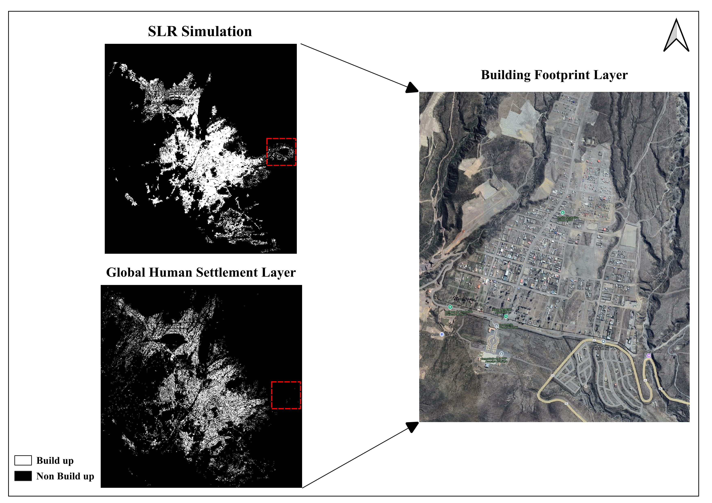

Spatial Logistic Regression
Growth probability modeled using spatial drivers.
This project explored how spatial factors can be used to model and simulate urban expansion in Arequipa, Peru. A spatial logistic regression approach was used to estimate where urban development was most likely to occur.
The model combined environmental conditions, accessibility, existing development and urban-form variables, then compared statistically informed growth with a random simulation and real-world settlement data.

Urban growth is shaped by more than available land. Accessibility, terrain, existing development and proximity to established urban areas can all influence where expansion occurs. This project tested how these spatial relationships could be incorporated into an urban growth model for Arequipa.
Growth probability modeled using spatial drivers.
Statistically informed growth compared with random allocation.
Outputs compared against GHSL 2018 and observed building footprints.
A set of environmental, accessibility and existing-development variables was prepared to represent factors that could influence the location of urban expansion.
Terrain steepness
Height above sea level
Distance to secondary and tertiary roads
Distance to major transport corridors
Proximity to areas already developed
Distance from Arequipa’s established urban core
Existing land-surface condition
Not every candidate variable was retained. The model preparation included checks for multicollinearity and statistical significance so that strongly redundant or insignificant predictors did not distort the final regression.

Growth was substantially more likely close to areas that were already developed.
Increasing distance from roads substantially reduced the probability of urbanisation.
Steeper terrain was associated with a lower likelihood of development.
Areas closer to the established urban centre were more likely to urbanise.
The model achieved a Nagelkerke R² of 0.518, indicating that the selected spatial variables explained a meaningful share of variation in the observed urban-growth pattern.
Two allocation approaches were compared. The spatial logistic regression simulation used the estimated relationships between urban growth and its spatial drivers, while the random simulation allocated growth without considering those relationships.

Uses accessibility, terrain, existing development and other spatial relationships when allocating growth.
Allocates growth without incorporating the spatial influence of those predictors.
Overall accuracy was high for both approaches because most cells remained non-built-up. Precision and recall provide a more useful distinction for evaluating how effectively the simulations captured actual urban growth.
Landscape metrics were used as an additional way to compare the spatial structure produced by the simulations with GHSL 2018.
| Metric | SLR | Random | GHSL 2018 |
|---|---|---|---|
| Number of patches | 1,769 | 11,031 | 5,123 |
| Mean patch area | 48,138.10 | 7,719.73 | 10,603.53 |
| Mean patch shape ratio | 3.116 | 3.882 | 3.422 |
The simulated growth areas were also visually compared with GHSL 2018 and building footprints visible in satellite imagery. This provided a direct check of whether predicted growth corresponded with areas where urban development actually existed.



The project demonstrated how urban-growth simulation can move beyond random allocation by incorporating accessibility, terrain and existing development patterns. Although the model remained imperfect, the spatially informed simulation produced substantially stronger urban-growth precision and recall than the random approach and provided an interpretable framework for understanding where development was more likely to occur.